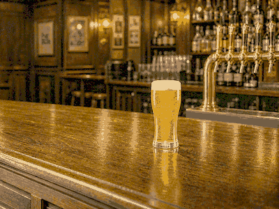

Recipe
Slovak onion soup in bread
Cibuľová polievka served in a hollow bread bowl: warm onion soup with the bread as both bowl and side.
Ingredients
- 5 large onions
- 2 tbsp butter or lard
- 1 l beef or vegetable stock
- Garlic
- Marjoram
- Round crusty bread loaves
How to make it
- Slice the onions thinly and cook them slowly in butter until soft, sweet and golden.
- Add garlic, marjoram and stock, then simmer until the broth is rounded and the onions are tender.
- Cut the top from each bread loaf, hollow it carefully, and warm the bread so the crust stays firm.
- Ladle the hot soup into the bread bowl just before serving, with the bread lid or toasted crumb on the side.
More info

BeerCold malt for salt, smoke and soup Central European folkHomely folk mood for soup and bread
Central European folkHomely folk mood for soup and breadServing note
Serve it immediately once the soup goes into the bread. The best version has a crisp crust outside, warm soaked bread inside and a sweet, savory onion broth.